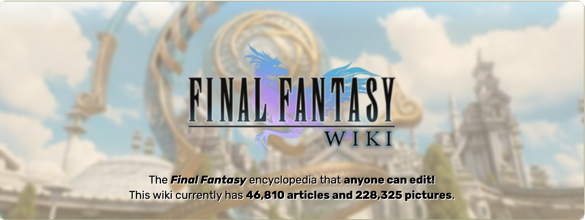

Summary
This
is my favorite game

Series
Final Fantasy I
Final Fantasy II
Final Fantasy III
Choose your favarite
Name:
Select serie
Final Fantasy I
Final Fantasy III
Final Fantasy V
Final Fantasy VI
Final Fantasy X
Square Enix
Japan